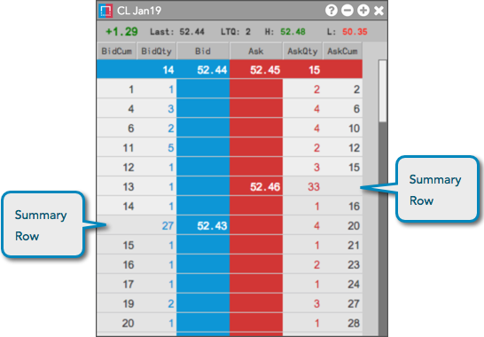
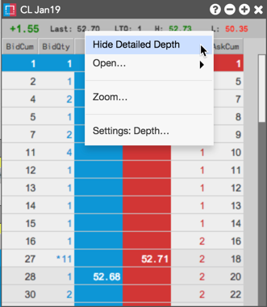
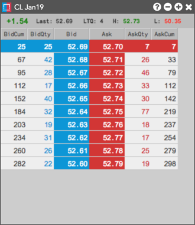
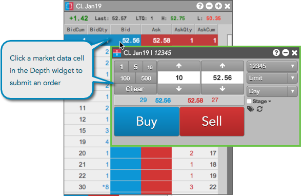
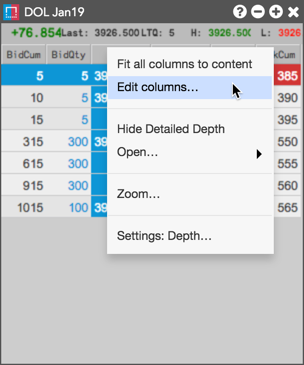

Use the Depth widget to:
- View detailed depth if provided by the exchange, or all levels of available aggregate depth
- Submit orders at each level of depth
- View counterparty data if provided by the exchange
Viewing detailed and aggregate depth in the Depth widget
Detailed depth is displayed by default, but you can view aggregate depth for an instrument using the Show/Hide Detailed Depth context menu option.
To view detailed and aggregate depth:
Open a stand-alone or launch a linked Depth widget for an instrument.
Detailed depth is displayed for the selected instrument.

Tip: Enable the Show summary rows widget setting to display the total Bid and Ask quantities at each price level of detailed depth.

To view aggregate depth, right-click in the widget and select Hide Detailed Depth in the context menu.

All levels of aggregate depth provided by the exchange for the instrument are displayed.

Submitting orders from the Depth widget
To submit orders:
Open a stand-alone or launch a linked Depth widget for an instrument.
Select a level of market depth and click a cell in the BidQty, Bid, Ask, or AskQty column to open your default order entry widget seeded with the selected market data.

Optionally, right-click in the widget away from these columns and select Open | Order Ticket or Open | MD Trader from the context menu.
Viewing counterparty data in the Depth widget
When detailed depth is displayed in the Depth widget, you can view counterparty codes or names at each level of depth if this data is provided by the exchange.
To view counterparty data:
Open a stand-alone or launch a linked Depth widget for an instrument.
- Right-click in the column headers and click Edit columns... to select the BidMbr and AskMbr columns and click OK.

The counterparty code or name is displayed in the BidMbr and AskMbr columns.